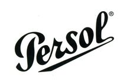
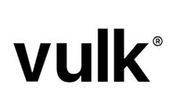
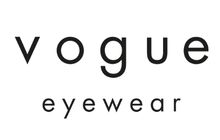
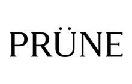
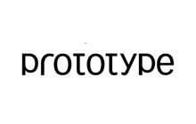
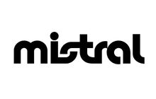
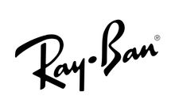
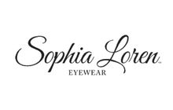
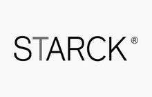

Armazones para tu estilo
Opciones nacionales e importadas para distintos gustos. Te orientamos según el calce, el uso, la comodidad y lo que querés encontrar.
CONSULTAR ARMAZONES
Atención personalizada. Gran variedad de armazones, cristales de alta tecnología y adaptación profesional de lentes de contacto en un solo lugar.

Identidad y propuesta de valor
En Bestview Óptica ofrecemos un Servicio Óptico Completo y de Contactología. Somos una óptica familiar de 3 generaciones atendida por sus dueños. Esto significa que te acompañamos desde la medición exacta de tu vista hasta el ajuste final de tus lentes.
Combinamos la calidez de la atención personalizada con la precisión técnica que tu visión necesita, ya sea que busques armazones de diseño, cristales con filtros avanzados o lentes de contacto adaptados a tu córnea.
CONSULTAR POR WHATSAPP
Diseño para todos los días
Diseños para distintos estilos, con el acompañamiento para encontrar el que te represente.
Encontrá el que va con vos
Explorá armazones nacionales e importados, cristales con tecnología actual y alternativas de contactología. Trabajamos con marcas como Ray-Ban, Emporio Armani, Persol, Vogue, Armani Exchange, Stetson, Union Pacific, Rusty, Vulk, Prune, Mistral, Prototype, Sophia Loren Eyewear y Stark Eyewear, entre otras.
Te orientamos según tu receta, el uso, el calce y el presupuesto. Los modelos y la disponibilidad pueden variar; escribinos antes de acercarte y confirmamos.
CONSULTAR MARCAS Y MODELOS


Diseño, comodidad y una mirada propia.









Asesoramiento de principio a fin
Como centro de salud visual integral, te acompañamos desde la elección de armazones y cristales hasta estudios visuales, ajustes, reparaciones y consultas por adaptación de lentes de contacto.
Opciones nacionales e importadas para distintos gustos. Te orientamos según el calce, el uso, la comodidad y lo que querés encontrar.
CONSULTAR ARMAZONES
Además de la receta, conversamos sobre tu día a día: lectura, pantallas, manejo o actividades al aire libre para orientarte entre las opciones disponibles.
CONSULTAR CRISTALES
Podés consultarnos por ajustes y reparaciones sin cargo. El alcance depende del estado del armazón y del tipo de trabajo.
CONSULTAR REPARACIÓNServicio Óptico y Contactología
En Óptica Best View contás con un servicio completo de contactología a cargo de nuestro contactólogo especializado. Realizamos la adaptación de lentes de contacto blandas, tóricas y multifocales, evaluando la anatomía de tu córnea, tu receta y tu estilo de vida para encontrar la opción de mayor comodidad y nitidez. Ideal para quienes tienen astigmatismo, presbicia o buscan una primera adaptación con acompañamiento profesional.
Cada proceso incluye el estudio visual completo, la prueba en consultorio y el seguimiento para asegurar que los lentes HD te den la visión y el confort que esperás. También atendemos adaptaciones complejas y cambios de marca o geometría cuando el paciente ya usa lentes de contacto.
Los estudios visuales y la adaptación de lentes de contacto no reemplazan la evaluación ni el diagnóstico médico oftalmológico cuando corresponde.
CONSULTAR ADAPTACIÓN DE LENTESPromociones y formas de pago
Las promociones en cristales, las cuotas y los beneficios por pago en efectivo pueden cambiar. Escribinos y confirmamos vigencia, disponibilidad y condiciones para tu caso antes de que te acerques.

Entrega
Cuando la receta, el stock y el laboratorio lo permiten. Consultanos por el plazo de tu pedido.
Garantía
La garantía depende del producto y de las condiciones de uso. Escribinos para confirmar el alcance.
Obras sociales y prepagas
Escribinos con el nombre de tu obra social o prepaga y te ayudamos a confirmar los beneficios disponibles para tu plan.
Podés consultarnos por beneficios con OSDE, Cobermed, Omint, el Colegio de Escribanos de la Ciudad de Buenos Aires, Accord Salud, IOSFA, SanCor Salud, Swiss Medical, Medifé, Centro Médico Pueyrredón y ObSBA. Los descuentos y beneficios dependen de la entidad, el plan y las condiciones vigentes; confirmamos cada caso por WhatsApp.
CONSULTAR MI PLAN
Te orientamos por WhatsApp
Contanos qué necesitás. Confirmamos opciones y condiciones vigentes para tu caso antes de que te acerques al local.
Antes de venir
Si necesitás confirmar disponibilidad, escribinos y te ayudamos.
Estamos en Av. Cabildo 3038, CP 1429, Ciudad Autónoma de Buenos Aires, en una zona práctica para Núñez, Belgrano y alrededores.
Sí. Podés escribirnos por turnos, anteojos, cristales, reparaciones o beneficios. Te orientamos y confirmamos la información disponible.
Podés consultarnos por tu obra social o prepaga. Los descuentos y beneficios dependen del plan y de las condiciones vigentes.
Podés consultarnos por ajustes y reparaciones sin cargo. El alcance depende del estado del armazón y del tipo de trabajo.
La receta y el uso cotidiano ayudan a orientar la elección. Escribinos para conversar sobre tu necesidad y conocer las opciones disponibles.
Sí. Óptica Best View publica servicios de contactología y adaptación de lentes de contacto. Escribinos para confirmar disponibilidad y si necesitás coordinar un turno.
Las condiciones pueden cambiar. Consultanos por promociones en cristales, cuotas y beneficios por pago en efectivo; te confirmamos qué opciones están vigentes para tu caso.
Algunos pedidos pueden resolverse en ese plazo, según la receta, el stock y los tiempos del laboratorio. Consultanos antes de acercarte para confirmar la disponibilidad.
Núñez · Belgrano · CABA
Estamos en Av. Cabildo 3038. Si preferís, coordina tu visita por WhatsApp y te orientamos antes de acercarte.
Escribinos directamente
Completá el formulario y te enviamos los datos listos en WhatsApp.